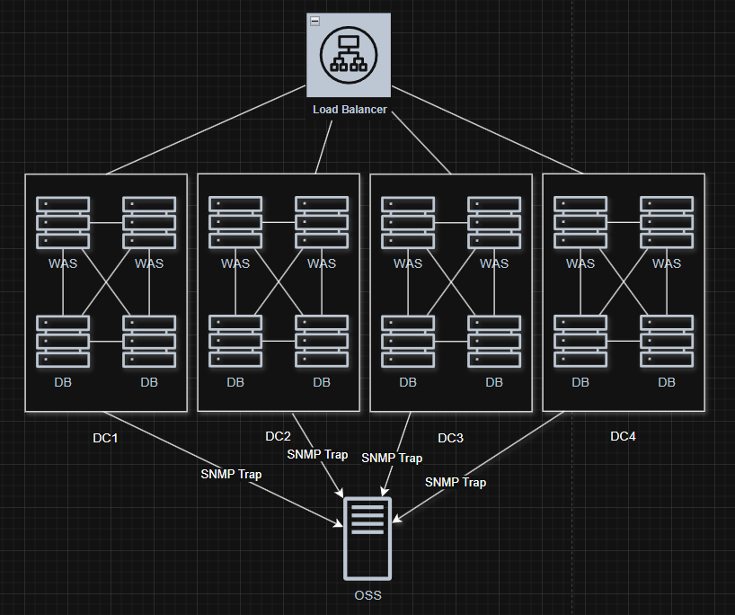
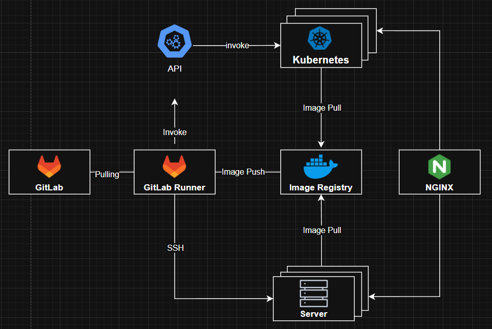

요약
치열하게 배우고 성장하며, 기대를 뛰어넘는 가치를 만들어내는 개발자입니다.
2년차 서버 백엔드 개발자로서, Java/Spring을 중심으로 GIS 시스템의 전체 개발 과정을 경험했습니다.
단순히 코드를 작성하는 것을 넘어, 객체지향 설계 원칙을 기반으로 미래의 확장성과 유지보수성을 고려한 유연한 아키텍처를 설계하고 구축합니다.
고도로 동시적이고 논블로킹적인 작업환경에서 코드를 다루는 것을 좋아합니다. 이러한 개발 프로세스를 구축하기 위해 사내에 없던 CI/CD 파이프라인을 도입하여 테스트 커버리지를 50%를 달성하여 시스템의 안정성을 높이고, 배포 자동화를 통해 배포 시간을 30% 단축하는 등 사내 개발 문화 개선 활동을 리드하고있습니다.
'혼자 가면 빨리 가지만 함께 가면 멀리 간다'는 신념 아래, 저는 팀 전체의 지속적인 성장을 추구합니다. 단순히 개인의 성과를 내는 것을 넘어, 테스트 확보, 설계 문서화, 그리고 코드 리뷰와 같은 과정을 통해 모두가 이해하고 기여할 수 있는 지속 가능한 코드를 만드는 데 힘씁니다. 이러한 접근이 궁극적으로 팀의 생산성과 코드 품질을 향상시키는 가장 효과적인 방법이라고 믿습니다.
새로운 도메인에 대한 빠른 학습 능력을 바탕으로, 백엔드 개발을 넘어 프론트엔드와 AI 분야까지 폭넓게 경험하고 있습니다. CNN 모델을 학습하고 모델 서빙 API의 TPS 180%를 달성하는 등 백엔드 외 AI/ML 및 프론트 엔드 경험을 통해 적응력을 증명해냈습니다.
업무 경험
Backend-Developer
JBT Corp@코어개발팀 (2024년 01월~현재)시스템 모니터링 에이전트 구축
영국 ESN 재난안전통신망 (2025년 01월 ~ 현재) [배경]:4대의 데이터센터의 분산 배치된 16대의 서버의 수많은 프로세스가 유기적으로 동작하는 환경에서 장애 발생 시 '고객 문의'를 통해 인지하는 경우가 잦았으며, 원익 파악에 과도한 시간이 소요됨. '왜' 문제가 발생했는지, '어떻게' 상태가 유지가 되는지, '얼마나' 유지가 되었는지에 대한 시간 소요의 최적화를 위함
 [내용]:- 장애관리 - 서비스 중단, 하드웨어 고장, 네트워크 단절 및 애플리케이션 오류 등 비정상적인 이벤트를 실시간으로 감지
- FailOver - 주요 프로세스 오류 및 중단에 대한 Reload 시스템 구축
- 30만 사용자 tps 6000+건를 처리하는 서버 상태에 대한 다운타임 99.9% 확보
- 서비스 중단 및 사고에 대한 알람 처리 실채 5%미만 달성(network 등 미션 크리티컬한 알람의 경우 처리를 하지 못함, 개선 포인트)
사내 개발 프로세스 자동화
JBT@ (2024년 05월 ~ 현재) [배경]:잦은 배포 실패와 장애, 느린 개발 속도, 배포할때마다 반복되는 수작업, 기술의 부채, 병목 현상와 같은 지속적인 고질적인 업무프로세스의 불편함
 [내용]:- 사내 팀 단위로 개발 하는 방법에 대한 조사
- 기존 수동 배포 프로세스의 문제점(병목 지점) 분석 및 동료 개발자 인터뷰를 통한 개선 요구사항 수집
- 사내에서 사용하고 있는 Gitlab을 사용한 Gitlab Native(Gitlab Runner, Gitlab Image Registry, k8s)환경의 CI/CD 파이프라인 아키텍처 설계 및 구축
- 배포 시간 30% 단축, 주기적 배포 가능한 환경 구축 완료
- 테스트 커버리지 50% 달성
- Blog Post
차세대 공간정보 관리 지도 웹 애플리케이션 개발
현대오토에버 (2024년 01월~2024년 06월)
[배경]:기존 공간정보 편집 툴 CS 프로그램의 다중 사용자의 실시간 접근의 필요. 다중사용자의 실시간 접근성을 해결하기 Web 베이스로 마이그레이션 Web을 통한 공간정보 Feature간 유기적인 상호작용 이벤트(CRUD, Merge, Split 등)의 필요성 증대
[내용]:- 공간정보 편집 및 실시간 협업 기능에 대한 데이터 모델링, BFF API 설계 및 개발
- Lock 메커니즘을 적용해 실시간 협업 데이터 동기화 문제 해결, React.js를 활용한 사용자 인터랙티브 지도 UI 구축.
- React.js를 활용한 사용자 인터랙티브 지도 UI 구축
- Feature의 상태를 관리 및 User interaction한 페이지를 구축하기 위해 선택
기술 스택
Java & Spring
객체지향 설계 원칙을 깊이 이해하고 유연하고 확장가능한 아키텍처를 구현하며, TDD 기반의 견고하고 테스트 용이성이 높은 시스템을 구축합니다.
Typescript & React.js
GIS 지도 애플리케이션의 사용자 인터페이스(UI)를 구축하며 컴포넌트 기반 개발 및 상태 관리에 대한 이해를 바탕으로 동적인 UI를 구축할수있습니다.
C/C++
100+억원 가량의 시스템 모니터링 에이전트 개발에 참여하여 안정적인 로직 구현에 기여했습니다.
특히 자원 제약적인 환경에서도 신중하게 설계하고, 장애 발생 시 서비스 연속성을 보장하는 페일오버(Failover) 메커니즘 구축을 지원했습니다.
Pytorch & FastAPI
해결하고자하는 문제를 빠르게 프로토타이핑 할 수 있습니다.
CNN 기반 산불 모니터링 모델 연구 및 최적화 경험을 통해 머신러닝 모델의 개발, 학습, 평가에 활용하며, 주도적으로 머신러닝 모델 서빙을 위한 PoC(Proof of Concept) 개발을 하였습니다.
PostgreSQL
관계형 데이터베이스의 기본 원칙들을 깊이 이해하고 있으며, 이를 바탕으로 데이터 모델링 및 효율적인 쿼리 작성을 합니다.
Docker & Kubernetes
[비효율을 끊어내는 여정] 개발 프로세스의 비효율을 끊어내고자 CI/CD 파이프라인과 연동하여 빌드, 테스트, 배포 과정을 자동화하고 개발 생산성을 개선하고 있으며, 테스트 환경 구축을 통해 품질 향상에 기여하고 있습니다.
기타 활동
CNN기반 산불 모니터링
2025년 06월 ~ 2025년 07월
프로젝트 링크성과: CNN 기반 모델 연구 및 최적화를 통해 기존 모델 대비 180% 향상된 TPS를 확보했습니다.
알고리즘 스터디(PS ATTACK 스터디장)
2022년 08월 ~ 2024년 01월
스터디 링크(리뉴얼)다양한 알고리즘 문제의 노출되어 서로의 문제해결 의견을 나누는 온/오프라인 스터디 운영
4주의 온라인 스터디, 종합 500+건의 문제 풀이와 리뷰를 진행하였습니다.
교육 및 자격증
경민대학교, 소프트웨어학과 전문학사 (3년)
2019년 03월 ~ 2024년 02월
정보처리기사
2025월 09월 12일 취득